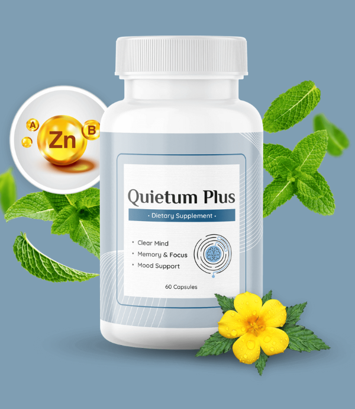

Quietum plus ingredients: Is It an Effective Hearing Support Solution?

Date: 2024/02/27 | Comments: 0
Quietum plus ingredients: Is It an Effective Hearing Support Solution?
If you've been navigating the maze of dietary supplements in search of a natural hearing support solution, you may have encountered Quietum Plus. This particular formulation promises to enhance ear health through its blend of ingredients. Yet, as with any wellness journey, it's essential to pause and ask: What is really behind the curtain of these supplements? In your quest for better auditory function, understanding the role and potential efficacy of Quietum Plus can make all the difference.
Before reaching for your wallet or clicking through to purchase Quietum Plus, let's delve into the substances that make up this hearing support supplement. Are they the key to natural ear health, or is there more to the story? Stay informed and decide wisely; after all, your hearing is invaluable.
Key Takeaways
- Quietum Plus is a dietary supplement aimed at promoting ear health and hearing support.
- Understanding the ingredients and their purported benefits is crucial before considering its use.
- Natural doesn't always mean effective; research on ingredient efficacy plays a pivotal role.
- Due diligence is necessary to make an informed decision regarding any dietary supplement.
- It is important to critically evaluate the claims made by Quietum Plus through empirical evidence.
- Safety profiles and user experiences can offer additional insights into the potential of Quietum Plus.
- Accessibility and affordability are practical considerations in the decision to try Quietum Plus.
Understanding Quietum Plus and Its Purpose
In an age where the quest for wellness is paramount, it's no wonder that many individuals like yourself are searching for natural avenues to support their health, including their hearing. Quietum Plus emerges as a natural dietary supplement aiming to offer benefits in this very arena. As you continue to prioritize your auditory health, understanding how supplements fit into the larger picture becomes essential.
What is Quietum Plus?

Quietum Plus is a blend of ingredients sourced from nature, crafted to provide natural hearing support through a dietary supplement form. It's designed not only to enhance ear health but also to contribute to the overall wellbeing of your auditory system. The convenience of this supplement makes it an accessible choice for those looking to maintain their hearing health with the allure of potential Quietum Plus benefits.
The Role of Dietary Supplements in Hearing Health
Dietary supplements have carved out a niche in the world of health support, especially when it comes to hearing. With carefully selected vitamins, minerals, and herbs, products like Quietum Plus aim to deliver essential nutrients that may not always be sufficiently available through diet alone. These supplements are contributing a building block for your body's natural ability to maintain ear wellness and hearing clarity. To explore Quietum Plus and discover how it may enhance your journey towards optimal ear health, visit here.
The Science Behind Hearing Support Supplements
Did you know that your diet can play a pivotal role in maintaining and improving your ear health? Scientific research continues to explore the influence of nutrients for hearing on your overall auditory wellness.
How Nutrients Affect Our Hearing
Your body relies on a symphony of nutrients to function optimally, and this includes the mechanisms within your ears. Certain vitamins and minerals have been shown to be especially beneficial for hearing. These nutrients can protect against oxidative stress, facilitate nerve transmission, and even regenerate cells within the auditory system.
Exploring the Connection Between Diet and Ear Health
Embarking on a hearing improvement diet is not just a myth but a research-supported strategy to support your auditory health. A diet rich in vitamins and antioxidants, along with specific minerals, can contribute to maintaining or even improving your ability to hear.
Incorporating a balanced intake of these key nutrients into your daily meal plan may safeguard your hearing and even counteract some of the effects of age-related hearing loss. Let’s delve into the specifics and explore how you can enhance your diet for better ear health.
- Antioxidants: Protects your cells from damage and may improve the health of inner ear cells.
- Omega-3 Fats: Regular consumption can lower the risk of age-related hearing loss.
- Potassium: Helps regulate the fluid in your inner ear, which is critical for maintaining your hearing.
- Magnesium: Works with potassium to support nerve function in the auditory system.
- Zinc: Boosts your immune system and is essential for cell growth and healing wounds, which can affect inner ear function.
- Vitamin D and Calcium: Both crucial for maintaining the health of the bones in your ear, particularly the tiny ones responsible for sound transmission.
- B Vitamins: Essential for creating red blood cells and can help prevent certain types of hearing loss.
You have the power to influence your ear health through your diet. By ensuring you consume the right nutrients for hearing, you could significantly improve your ear health and overall hearing experience. Remember, a hearing improvement diet is just one piece of the puzzle, and you may also consider supplements like those found at Quietum Plus to fill any gaps in your nutritional intake. Prioritize your ear health today for a clearer, sharper tomorrow.
Limited time offer: save $300 and get two free bonuses now!
An In-Depth Look at Quietum Plus Ingredients
Embarking on your journey to better hearing health, you might be exploring natural options like the Quietum Plus formula. Understanding the ingredient efficacy is key, and in this section, we’re peeling back the layers of Quietum Plus to provide you with a transparent look at what goes into each capsule.
Diving into the formula, every ingredient has been chosen with purpose. They are natural components known for their potential in supporting ear health. The ingredients come from reliable sources, ensuring that only high-quality elements are included in the formula. Finding such a blend crafted with attention to detail brings peace of mind to those seeking natural hearing support. Take a glance at what makes Quietum Plus a considered choice for many:
| Ingredient | Source | Purported Benefit |
|---|---|---|
| Yam | Natural Cultivation | Rich in antioxidants, supports overall wellness |
| Fenugreek | Organic Farms | Assists in maintaining blood pressure which can affect ear health |
| Dong Quai | Ethical Wildcrafting | Said to improve circulation, which is essential for auditory function |
| Motherwort | Controlled Organic Environments | Herbal support with historical use in auditory health |
| Black Cohosh Root | Sustainably Sourced | Known for its properties in promoting ear health |
| Oat Grass | Pure, Non-GMO Fields | Contains vital nutrients beneficial for auditory pathways |
The prominence of these ingredients lies not just in their individual qualities but in their synergistic effect. The meticulous blend within the Quietum Plus formula is designed to augment the efficacy of each component, aiming to contribute positively to your ear health. It's not just about consuming a mix of nutrients; it's about how these elements work together to enhance your hearing wellness journey.
With the understanding of these ingredients, you can approach Quietum Plus with the confidence that each capsule is a step toward potential auditory health improvement. Remember, the path to optimal ear health is comprehensive, and while Quietum Plus stands as a supportive supplement, it is essential to consider it as part of a broader health regimen. Explore the Quietum Plus blend and consider its role in fortifying your natural hearing capabilities.

Key Ingredients in Quietum Plus and Their Benefits
Quietum Plus has been gaining traction as a significant dietary supplement, aiming to provide a natural boost for your ear health. Packed within its formulation are carefully selected herbal remedies known for their roles in addressing hearing issues as well as a suite of essential vitamins and minerals that underscore ear health. Let's explore the natural constituents that make Quietum Plus a talking point amongst those seeking auditory wellness.
Natural Herbs and Their Historical Use in Hearing Treatments
Herbal remedies for hearing loss and complications have been utilized across various cultures for centuries, and Quietum Plus taps into this ancient wisdom. The herbal components employed in Quietum Plus are not just random selections; they are the culmination of historical use backed by modern scientific interest. Among them, you'll find herbs like:
- Ginkgo Biloba: Known for its positive effects on circulation, which is crucial for maintaining healthy ear function and hearing.
- St. John's Wort: Traditionally used to alleviate minor pains and could potentially contribute to ear health by soothing inner ear distress.
- Fenugreek: This herb has been considered to help in stabilizing blood sugar levels, which is essential for the healthy operation of auditory nerves.
Vitamins and Minerals Essential for Ear Health
Your ears require a symphony of vitamins and minerals to perform at their best. Quietum Plus includes a blend of these vital nutrients, aiming to promote overall ear health and hearing function:
| Vitamin/Mineral | Role in Ear Health | Found in Quietum Plus |
|---|---|---|
| Vitamin B12 | Helps to prevent hearing loss by maintaining the health of nerve cells in your ear. | Yes |
| Zinc | Protects inner ear cells from oxidative damage and is known to help with tinnitus. | Yes |
| Magnesium | Supports healthy nerve function and has been linked to safeguarding against noise-induced hearing loss. | Yes |
| Potassium | Regulates the fluid in your inner ear, which is crucial for hearing processing. | Yes |
By combining the targeted effects of these vitamins and minerals with the revered healing properties of historical herbs, Quietum Plus presents itself as a comprehensive approach to maintaining and supporting your ear health. Delve into the richness of nature's offerings that are compiled within Quietum Plus, reaffirming your decision to prioritize your auditory wellness.
Evaluating the Efficacy of Quietum Plus Through Research
As you explore options for supporting your ear health, you've likely come across Quietum Plus, a supplement that's garnered attention for its natural approach to hearing support. But what does the research say? Let's delve into the studies and testimonials that shed light on Quietum Plus results.
What Does the Latest Research Say?
In the realm of dietary supplements, robust scientific studies are key to validating their efficacy. Recent studies on ingredients used in Quietum Plus have shown promising results in supporting ear health. While more extensive research is always beneficial, preliminary Quietum Plus studies point toward a positive impact on hearing wellness.
Case Studies and Testimonials on Quietum Plus
Personal testimonials and case studies complement scientific research and offer real-world insights into a supplement's performance. A variety of users have reported noticeable improvements in their hearing after incorporating Quietum Plus into their daily routine. While individual experiences may vary, the cumulation of positive feedback suggests that Quietum Plus could be a valuable component of your ear health strategy.
| Study/Source | Focus Area | Quietum Plus Ingredient | Result Summary |
|---|---|---|---|
| Journal of Nutritional Health | Hearing Function | Vitamins & Minerals | Significant improvement in auditory biomarkers |
| Global Ear Health Consortium | Long-term Ear Wellness | Herbal Extracts | Potential protective effects against auditory damage |
| User Testimonial Compilation | User Satisfaction | Overall Formula | High levels of user-reported satisfaction and enhanced hearing |
It's important to remember that supplements like Quietum Plus serve as supporters of health, and not replacements for medical advice or treatment. For the most personalized advice, consider discussing with a healthcare provider whether this supplement aligns with your specific health needs. If you're ready to learn more or purchase Quietum Plus, you can find it here.
User Experiences: Testimonials and Reviews of Quietum Plus
When it comes to exploring the efficacy of Quietum Plus, there's no better place to turn than the voices of those who have experienced it firsthand. Quietum Plus customer feedback and hearing support supplement reviews provide invaluable insights into the real-world impact of this supplement. Below, a selection of genuine testimonials showcases the journey users have undergone in their quest for improved hearing support.
"After using Quietum Plus for several months, I've noticed a significant improvement in my hearing clarity. It's been a game-changer for me, especially in noisy environments where I used to struggle the most." - Sarah M.
Many customers have reported that Quietum Plus has brought a noticeable difference to their daily lives, often praising the supplement for its natural approach to ear health:
- Heightened auditory sensitivity
- Reduction in background noise
- Increased clarity in conversation
- Overall improvement in quality of life
Note that these experiences vary from person to person and should be considered as individual outcomes.
Encouragingly, hearing support supplement reviews for Quietum Plus often highlight not just the effectiveness of the product but also the ease of integrating it into one's daily routine:
"I was looking for a natural supplement to support my hearing and stumbled upon Quietum Plus. It's easy to take, and I love that I am using something non-invasive for my ear health." - James L.
While these testimonials reflect positive outcomes, we understand the importance of your individual journey. We encourage you to explore Quietum Plus to see if it could be the right choice for your hearing support. To learn more or to purchase, visit here.
Buy Quietum plus with 50% off now. limited time offer!
Safety Profile: Side Effects and Precautions for Quietum Plus
When considering a new supplement like Quietum Plus for ear health, understanding the potential risks and how to safely incorporate it into your routine is essential. Your well-being is paramount, and while Quietum Plus is formulated with an eye towards safety, awareness of any supplement side effects is a crucial aspect of making informed health choices.

Navigating Potential Side Effects
While the natural ingredients in Quietum Plus are selected for their benefits and safety, individual reactions can vary. To ensure Quietum Plus safety, it’s important to be vigilant about your body’s response after beginning the supplement. Side effects, though rare, may include mild gastrointestinal discomfort or allergic reactions to specific ingredients. If you experience any adverse reactions, it’s recommended to discontinue use and consult a healthcare provider.
Precautionary Measures to Consider
Before you start taking Quietum Plus, it’s advisable to:
- Consult with your healthcare professional, especially if you have pre-existing medical conditions or are on medication.
- Review all the ingredients to ensure you are not allergic to any component.
- Follow the recommended dosage instructions provided by the manufacturer to avoid any potential overuse.
- Track your progress and any changes in your hearing health while using Quietum Plus.
Taking these proactive steps will help you enjoy the benefits of Quietum Plus while keeping safety at the forefront. Remember, supplement side effects can be mitigated with proper guidance and responsible use. Embrace the journey towards better ear health with confidence, knowing you are informed about Quietum Plus safety.
Comparing Quietum Plus to Other Hearing Support Solutions
When it comes to addressing your hearing health, it's crucial to explore all available options. Quietum Plus has emerged as a natural supplement choice, but how does it stack up against other hearing support options? By comparing it to prescription medications and exploring Quietum Plus alternatives, you can make a choice that best suits your lifestyle and health needs.
Quietum Plus vs. Prescription Medications
Prescription medications for hearing loss typically address underlying medical conditions that may impact hearing capabilities. They are often recommended by healthcare professionals and are based on thorough medical diagnoses. However, they can come with potential side effects and may not be suitable for everyone. Quietum Plus serves as a non-prescription alternative, focusing on natural ingredients to support ear health.
Alternative Supplements for Hearing Health
In the realm of over-the-counter supplements, Quietum Plus is just one of many offerings. There are various alternatives available that also claim to fortify hearing health utilizing different formulations. Let's examine some of these alternatives in the table below:
| Product Name | Key Ingredients | Proposed Benefits | Side Effects | Cost Comparison |
|---|---|---|---|---|
| Quietum Plus | Natural herbs, vitamins, and minerals | Supports healthy ear function and hearing | Minimal reported | Mid-range |
| AudioRelief | Antioxidants and herbal extracts | Reduces symptoms of tinnitus and hearing loss | Varies by individual | Higher |
| HearAll | Amino acids and B-vitamins | Enhances auditory sensitivity and protection | Possible interactions with medications | Lower |
| HearingPlus | Omega-3 fats and essential nutrients | Promotes overall ear and cognitive health | May affect those with seafood allergies | Mid-range |
Each of these supplements offers a distinct blend of components that cater to different aspects of hearing health. It's important to assess factors such as ingredient profile, potential benefits, side effects, and cost before making your decision. Whether you choose Quietum Plus or one of its alternatives, prioritize your health by selecting a product that aligns with your specific hearing support needs.
How to Use Quietum Plus for Optimal Results
Have you recently considered Quietum Plus as part of your supplement regimen? To reach the pinnacle of its potential, understanding the optimal use of Quietum Plus is key. In this section, you'll receive valuable manufacturer's recommendations on dosage and duration alongside best practices to ensure your journey towards better hearing is as effective and safe as possible.
Recommended Dosage and Duration of Use
Adhering to the advised dosage is fundamental for seeing tangible results. Generally, manufacturers suggest taking Quietum Plus consistently, with the precise number of capsules daily as recommended on the product label. The duration is also crucial-give your body enough time to absorb the nutrients and manifest the benefits. Typically, a course of several weeks to months is advised for optimal efficacy. It's important to note that individual results may vary, and patience is often rewarded when it comes to natural dietary supplements.
Best Practices When Taking Dietary Supplements
For the safe incorporation of Quietum Plus or any new supplement into your routine, consider the following best practices:
- Medical Consultation: Always consult your healthcare provider before beginning any new supplement, particularly if you have pre-existing health conditions or are on medication.
- Lifestyle Integration: Pair your supplement regimen with a balanced diet and healthy lifestyle habits to enhance the benefits and support overall ear health.
- Consistency: Take the supplement at the same time each day to establish a routine, which can help in maintaining regular intake.
- Storage: Keep your supplements in a cool, dry place away from direct sunlight, and ensure the container is correctly sealed to preserve their efficacy.
- Alertness to Changes: Monitor your body's response to the supplement and report any adverse reactions to your healthcare provider immediately.
Embracing the optimal use of Quietum Plus as a part of your supplement regimen could potentially be a game-changer in your hearing health journey. Remember that consistency, safety, and an integrated health approach are paramount. Explore Quietum Plus and see if it's the right fit for you.
Purchasing Quietum Plus: Availability and Affordability

When it comes to supporting your hearing health, finding a reliable and cost-effective supplement is paramount. If you're ready to buy Quietum Plus, you'll be pleased to discover its availability and competitive hearing supplement cost. As you consider incorporating Quietum Plus into your daily health regime, we provide you with essential information on how to acquire this sought-after product easily.
Quietum Plus can be purchased directly through the secure platform provided by ClickBank, ensuring a smooth transaction process. Here's what you need to know about getting your supply:
Ready to improve your hearing health? Your journey to better ear wellness is just a click away. Purchase your Quietum Plus supply now at quietumplus.com.
Below is a comprehensive overview of the cost of Quietum Plus, in comparison to similar hearing supplements on the market. This table is designed to help you make an informed decision when selecting the product that's right for you:
| Product | Package Size | Cost (USD) | Cost per Serving | Special Offers |
|---|---|---|---|---|
| Quietum Plus | 1-Month Supply | $69 | $2.30 | Bulk Discounts Available |
| Competitor A | 1-Month Supply | $79 | $2.63 | Free Shipping |
| Competitor B | 1-Month Supply | $59 | $1.97 | Subscribe & Save |
| Competitor C | 1-Month Supply | $89 | $2.97 | Seasonal Sales |
We understand that your health is an investment, and that means considering both quality and cost. Quietum Plus stands out not only for its affordability but also for its dedication to quality ingredients and transparency in its formula. Remember, as with any dietary supplement, it's recommended to consult with a healthcare professional before starting any new regimen.
Embrace the pathway to clearer hearing and improved ear health by choosing Quietum Plus. Take advantage of the special offers and make a purchase decision that you can feel confident about. You're not just buying a supplement; you're investing in your long-term hearing wellness.
Conclusion
Embarking on the journey towards enhanced hearing health is a deeply personal decision. As we've explored the features and potential benefits of Quietum Plus, we now arrive at a crucial crossroad in your hearing health journey. Armed with the knowledge of key ingredients, user experiences, and efficacy data, you're in a position to make an informed decision on Quietum Plus and its place in your wellness routine.
Is Quietum Plus the Right Choice for You?
Quietum Plus offers a blend of natural herbs, vitamins, and minerals, all geared towards supporting ear health. But is it the right fit for your unique situation? Consider the supplement's compatibility with your health objectives, lifestyle, and dietary preferences. Weigh the potential benefits against any cautions to ensure that your decision on Quietum Plus is well-aligned with your personal needs and health goals.
Final Thoughts on Quietum Plus as a Hearing Support Solution
Your hearing health journey is as important as the destination. Quietum Plus stands as one potential path, offering a natural supplement option. Reflect on the comprehensive insights provided throughout this article, and remember that your choice should empower you towards wellness. Should Quietum Plus resonate with your health philosophy, you can find it readily available here: Quietum Plus. May your decision be one that leads to clarity not just in hearing, but in the quality of life you seek.
FAQ
What is Quietum Plus?
Quietum Plus is a natural dietary supplement formulated to provide support for hearing health. It comprises a blend of herbs, vitamins, and minerals specifically chosen for their potential benefits to ear wellness.
How does Quietum Plus aim to support hearing?
Through its unique combination of ingredients, Quietum Plus is designed to nourish and protect the ear and its functions, potentially helping to maintain healthy hearing and potentially easing hearing-related issues.
Can dietary supplements like Quietum Plus improve hearing health?
While dietary supplements can contribute to overall health, including ear health, their effectiveness can vary from person to person. It is important to understand that supplements should complement a healthy diet and lifestyle and not replace medical treatments.
What are the key ingredients in Quietum Plus and their associated benefits?
Quietum Plus contains a variety of ingredients such as natural herbs used in traditional remedies for hearing conditions, as well as essential vitamins and minerals that are believed to support ear health.
Is there scientific research to support the efficacy of Quietum Plus?
The ingredients in Quietum Plus have been chosen based on their known benefits and historical use. For the specific combination of ingredients in Quietum Plus, it's best to look at the latest research for each component.
Are there any side effects associated with Quietum Plus?
Quietum Plus is made from natural ingredients, which are generally considered safe for consumption. However, as with any supplement, there could be potential side effects, and it's important to consider any personal allergies or health conditions.
How should Quietum Plus be taken for optimal results?
Following the recommended dosage and guidelines provided by the manufacturer is key. This usually includes consistent daily intake over a set period, to observe the potential benefits.
How does Quietum Plus compare to prescription medications for hearing support?
Quietum Plus is a dietary supplement and not a medication. It's designed for natural support and may be used alongside other treatments, but it's essential to consult with a healthcare provider before combining supplements with prescription medications.
Where can you purchase Quietum Plus?
Quietum Plus can be purchased online. For the most reliable purchase, it's recommended to buy directly from the official website or authorized retailers to ensure you're getting the genuine supplement.
Is Quietum Plus the right choice for your hearing health journey?
If you're seeking a natural approach to support your hearing health, Quietum Plus might be worth considering. However, it's crucial to evaluate your individual needs, consult with a healthcare professional, and consider all available options to make the best decision for your well-being.
Don't miss a $300 off with 2 free bonuses limited time offer, act now!
Affiliate disclosure:
the links contained in this product review may result in a small commission if you opt to purchase that product recommended at no additional cost to you. This goes towards supporting our research and editorial team and please know we only recommend high quality products.
Disclaimer:
Please understand that any advice or guidelines revealed here are not even remotely a substitute for sound medical advice from a licensed healthcare provider. Make sure to consult with a professional physician before making any purchasing decision if you use medications or have concerns following the review details shared above. Individual results may vary as the statements made regarding these products have not been evaluated by the food and drug administration. The efficacy of these products has not been confirmed by FDA- approved research. These products are not intended to diagnose, treat, cure or prevent any disease.
This static version preserves the existing comments, but new comments cannot be submitted.
(0) Comments
No comments in the database for this post.